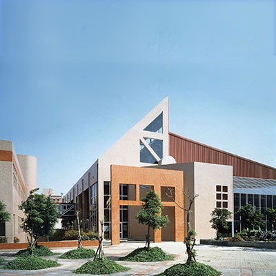

游泳池及外部介紹
CYCU'S
STADIUM
AND
SWIMMING POOL

體育館基地為斜邊的梯形土地，東側隔一大水溝即為鄰近的五層住宅區，
西側為前往運動場的校內重要道路，所以在設計時頗受地形限制，同時也有一定的挑戰。
場館主入口藉由挑空的門廳與二樓及地下室連貫成一個視覺穿透的整體。
場館主入口側將體積較小的運動設施，以鋸齒狀連附於主館旁，
除順應地界外，可減低主館體積龐大而造成的壓迫感。
屋頂採45°斜面採光高窗增加其使用品質。

中原大學的體育館側，有興建奧運標準的室內游泳池，
池內有水道8條長50M，提供游泳教學及正式比賽之用。
外牆R.C、屋頂鋼構，造型與已建成之體育館相輔相成。
在設計上嚴格劃分乾濕動線，觀眾從門廳直接引導至二層看台，
可容納觀眾400～600席，看台架高與體育館二樓以天橋相連，
看台下方作為更衣、浴廁、管理及機電之用。
由於泳池面臨校外道路，所以僅開高窗，
泳池兩端以大玻璃面配合池邊教學活動及休憩空間，並以天窗採光。
游泳池與體育館新建工程共同獲得1992年第14屆中華民國建築師雜誌銀牌獎。
而中華民國建築師雜誌獎（現台灣建築獎），是一項由中華民國全國建築師公會主辦，旗下的全國聯合會雜誌社承辦的一項優良建築選拔活動，
每年會從各建築師與建築領域相關單位所建設的新建物進行評選，
並決定入圍與最終獲獎者。其用意就是鼓勵各相關單位能提昇建築職業水準，
進而對台灣社會文化或藝術進行貢獻。而中原的體育館及游泳池項目，無疑是具有一定水準的。